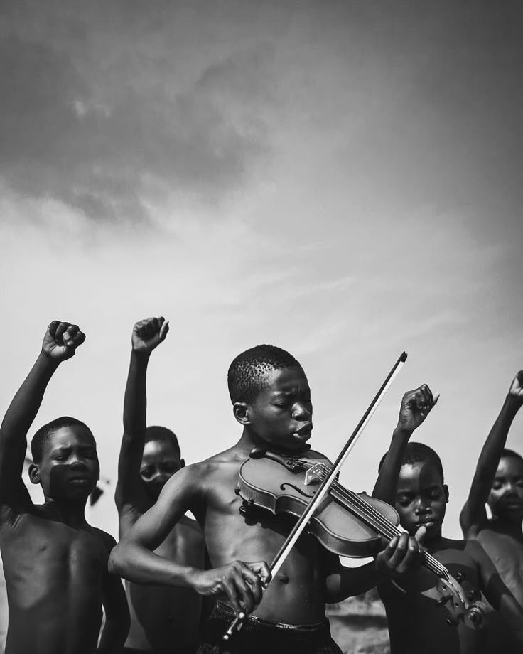

Entre punhos erguidos e olhares atentos, uma criança ergue seu violino.
O gesto é delicado, mas carrega uma força imensa: é a arte ocupando o espaço onde esperam silêncio ou medo.
O violino, instrumento muitas vezes associado à elite, aqui se transforma em ferramenta de ruptura — desafinando as expectativas sociais e afinando a esperança.
Ao seu redor, outros corpos pequenos formam uma guarda simbólica: crianças que aprendem desde cedo que sua existência é resistência.
Essa imagem não mostra apenas música. Ela mostra futuro sendo ensaiado na marra, na margem, no compasso do possível.